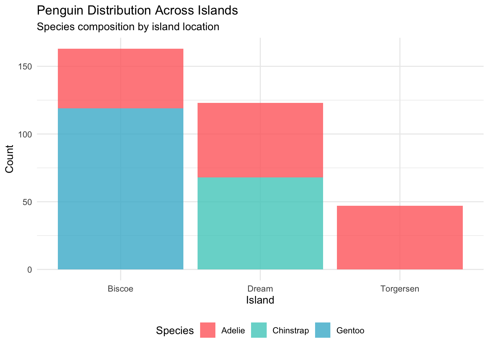
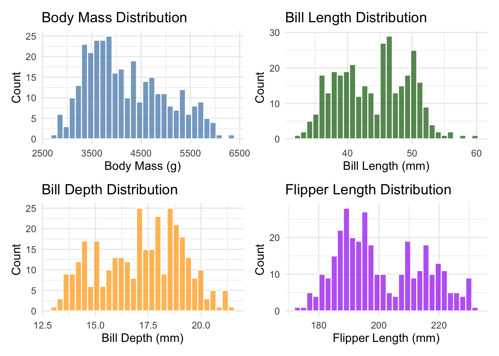

.jpg){kind=link}
# Install required packages if not already installed
install.packages(c("palmerpenguins", "tidyverse", "broom", "corrplot",
"GGally", "patchwork", "knitr"))Palmer Penguins Data Analysis Series (Part 1): Exploratory Data Analysis and Simple Regression
Getting acquainted with our Antarctic friends and their morphometric relationships
R Programming
Data Science
Statistical Computing
Exploratory Data Analysis
Palmer Penguins
Part 1 of a comprehensive 5-part series exploring Palmer penguin morphometrics through exploratory data analysis and simple regression modeling

Photo: African penguins at Boulders Beach, South Africa. Licensed under CC BY 2.0 via Wikimedia Commons
üêß Palmer Penguins Data Analysis Series
This is Part 1 of a 5-part series exploring penguin morphometrics:
- Part 1: EDA and Simple Regression (This post)
- Part 2: Multiple Regression and Species Effects
- Part 3: Advanced Models and Cross-Validation
- Part 4: Model Diagnostics and Interpretation
- Part 5: Random Forest vs Linear Models
1 Introduction
Welcome to our comprehensive exploration of the Palmer penguins dataset! In this 5-part series, we’ll journey through the complete data science workflow, from initial data exploration to advanced modeling techniques. The Palmer penguins dataset has become a beloved alternative to the iris dataset, providing real-world biological data that’s both engaging and educationally valuable.
Collected by Dr. Kristen Gorman at Palmer Station Antarctica, this dataset contains morphometric measurements for three penguin species: Adelie (Pygoscelis adeliae), Chinstrap (Pygoscelis antarcticus), and Gentoo (Pygoscelis papua). Understanding these relationships is crucial for Antarctic ecology research, as body mass serves as a key indicator of penguin health and reproductive success.
In this first part, we’ll focus on:
- Getting familiar with the Palmer penguins dataset
- Conducting thorough exploratory data analysis
- Understanding the relationships between morphometric variables
- Building our first simple regression model
- Establishing the foundation for more complex analyses in subsequent parts
By the end of this post, you’ll have a solid understanding of the data structure and the strongest individual predictors of penguin body mass.
2 Prerequisites and Setup
Before we begin our Antarctic adventure, let’s ensure we have the right tools:
Required Packages:
Load Libraries:
library(palmerpenguins)
library(tidyverse)
library(broom)
library(corrplot)
library(GGally)
library(patchwork)
library(knitr)
# Set theme for consistent plotting
theme_set(theme_minimal(base_size = 12))
# Set penguin-friendly colors
penguin_colors <- c("Adelie" = "#FF6B6B", "Chinstrap" = "#4ECDC4", "Gentoo" = "#45B7D1")3 Meet the Penguins: Dataset Overview
Let’s start by getting acquainted with our Antarctic research subjects:
# Load the Palmer penguins data
data(penguins)
# Basic dataset information
cat("üêß Palmer Penguins Dataset Overview üêß\n")üêß Palmer Penguins Dataset Overview üêßcat("=====================================\n")=====================================cat("Dimensions:", nrow(penguins), "observations ×", ncol(penguins), "variables\n\n")Dimensions: 344 observations × 8 variables# Display variable information
glimpse(penguins)Rows: 344
Columns: 8
$ species <fct> Adelie, Adelie, Adelie, Adelie, Adelie, Adelie, Adel…
$ island <fct> Torgersen, Torgersen, Torgersen, Torgersen, Torgerse…
$ bill_length_mm <dbl> 39.1, 39.5, 40.3, NA, 36.7, 39.3, 38.9, 39.2, 34.1, …
$ bill_depth_mm <dbl> 18.7, 17.4, 18.0, NA, 19.3, 20.6, 17.8, 19.6, 18.1, …
$ flipper_length_mm <int> 181, 186, 195, NA, 193, 190, 181, 195, 193, 190, 186…
$ body_mass_g <int> 3750, 3800, 3250, NA, 3450, 3650, 3625, 4675, 3475, …
$ sex <fct> male, female, female, NA, female, male, female, male…
$ year <int> 2007, 2007, 2007, 2007, 2007, 2007, 2007, 2007, 2007…3.1 Data Structure and Variables
Our dataset contains the following key measurements:
# Create a summary table of variables
variable_info <- tibble(
Variable = names(penguins),
Description = c(
"Penguin species (Adelie, Chinstrap, Gentoo)",
"Island location (Biscoe, Dream, Torgersen)",
"Bill length in millimeters",
"Bill depth in millimeters",
"Flipper length in millimeters",
"Body mass in grams",
"Penguin sex (female, male)",
"Study year (2007, 2008, 2009)"
),
Type = map_chr(penguins, class)
)
kable(variable_info, caption = "Palmer Penguins Dataset Variables")| Variable | Description | Type |
|---|---|---|
| species | Penguin species (Adelie, Chinstrap, Gentoo) | factor |
| island | Island location (Biscoe, Dream, Torgersen) | factor |
| bill_length_mm | Bill length in millimeters | numeric |
| bill_depth_mm | Bill depth in millimeters | numeric |
| flipper_length_mm | Flipper length in millimeters | integer |
| body_mass_g | Body mass in grams | integer |
| sex | Penguin sex (female, male) | factor |
| year | Study year (2007, 2008, 2009) | integer |
3.2 Missing Data Assessment
Before diving into analysis, let’s check for missing values:
# Check for missing values
missing_summary <- penguins %>%
summarise_all(~sum(is.na(.))) %>%
pivot_longer(everything(), names_to = "Variable", values_to = "Missing_Count") %>%
mutate(Percentage = round(Missing_Count / nrow(penguins) * 100, 1)) %>%
filter(Missing_Count > 0)
if(nrow(missing_summary) > 0) {
kable(missing_summary, caption = "Missing Values Summary")
} else {
cat("✅ No missing values found!")
}| Variable | Missing_Count | Percentage |
|---|---|---|
| bill_length_mm | 2 | 0.6 |
| bill_depth_mm | 2 | 0.6 |
| flipper_length_mm | 2 | 0.6 |
| body_mass_g | 2 | 0.6 |
| sex | 11 | 3.2 |
# Create clean dataset for analysis
penguins_clean <- penguins %>%
drop_na()
cat("\nüìä After removing missing values:")
üìä After removing missing values:cat("\n Original dataset:", nrow(penguins), "rows")
Original dataset: 344 rowscat("\n Clean dataset:", nrow(penguins_clean), "rows")
Clean dataset: 333 rowscat("\n Observations removed:", nrow(penguins) - nrow(penguins_clean))
Observations removed: 114 Exploratory Data Analysis
4.1 Species Distribution
Let’s start by understanding the composition of our penguin community:
# Species count and proportions
species_summary <- penguins_clean %>%
count(species, name = "count") %>%
mutate(percentage = round(count / sum(count) * 100, 1))
# Visualization
p1 <- ggplot(species_summary, aes(x = species, y = count, fill = species)) +
geom_col(alpha = 0.8) +
geom_text(aes(label = paste0(count, "\n(", percentage, "%)")),
vjust = -0.5, size = 4) +
scale_fill_manual(values = penguin_colors) +
labs(title = "Penguin Species Distribution",
subtitle = "Sample sizes across the three Antarctic species",
x = "Species", y = "Count") +
theme_minimal() +
theme(legend.position = "none") +
ylim(0, max(species_summary$count) * 1.15)
print(p1)

4.2 Geographic Distribution
Now let’s see where our penguins call home:
# Island distribution by species
island_species <- penguins_clean %>%
count(island, species) %>%
group_by(island) %>%
mutate(total = sum(n),
percentage = round(n / total * 100, 1))
p2 <- ggplot(island_species, aes(x = island, y = n, fill = species)) +
geom_col(position = "stack", alpha = 0.8) +
scale_fill_manual(values = penguin_colors) +
labs(title = "Penguin Distribution Across Islands",
subtitle = "Species composition by island location",
x = "Island", y = "Count", fill = "Species") +
theme_minimal() +
theme(legend.position = "bottom")
print(p2)

4.3 Morphometric Measurements: First Look
Let’s examine the distributions of our key morphometric variables:
# Create distribution plots for morphometric variables
p3 <- ggplot(penguins_clean, aes(x = body_mass_g)) +
geom_histogram(bins = 30, fill = "steelblue", alpha = 0.7, color = "white") +
labs(title = "Body Mass Distribution",
x = "Body Mass (g)", y = "Count")
p4 <- ggplot(penguins_clean, aes(x = bill_length_mm)) +
geom_histogram(bins = 30, fill = "darkgreen", alpha = 0.7, color = "white") +
labs(title = "Bill Length Distribution",
x = "Bill Length (mm)", y = "Count")
p5 <- ggplot(penguins_clean, aes(x = bill_depth_mm)) +
geom_histogram(bins = 30, fill = "orange", alpha = 0.7, color = "white") +
labs(title = "Bill Depth Distribution",
x = "Bill Depth (mm)", y = "Count")
p6 <- ggplot(penguins_clean, aes(x = flipper_length_mm)) +
geom_histogram(bins = 30, fill = "purple", alpha = 0.7, color = "white") +
labs(title = "Flipper Length Distribution",
x = "Flipper Length (mm)", y = "Count")
# Combine plots
morphometric_distributions <- (p3 + p4) / (p5 + p6)
print(morphometric_distributions)

5 Species-Specific Patterns
One of the most important aspects of biological data is understanding how patterns differ between groups. Let’s explore species-specific characteristics:
5.1 Morphometric Differences by Species
# Summary statistics by species
morphometric_summary <- penguins_clean %>%
group_by(species) %>%
summarise(
n = n(),
body_mass_mean = round(mean(body_mass_g), 0),
body_mass_sd = round(sd(body_mass_g), 0),
bill_length_mean = round(mean(bill_length_mm), 1),
bill_depth_mean = round(mean(bill_depth_mm), 1),
flipper_length_mean = round(mean(flipper_length_mm), 1),
.groups = "drop"
)
kable(morphometric_summary,
caption = "Morphometric Summary Statistics by Species",
col.names = c("Species", "N", "Body Mass (g)", "±SD",
"Bill Length (mm)", "Bill Depth (mm)", "Flipper Length (mm)"))| Species | N | Body Mass (g) | ±SD | Bill Length (mm) | Bill Depth (mm) | Flipper Length (mm) |
|---|---|---|---|---|---|---|
| Adelie | 146 | 3706 | 459 | 38.8 | 18.3 | 190.1 |
| Chinstrap | 68 | 3733 | 384 | 48.8 | 18.4 | 195.8 |
| Gentoo | 119 | 5092 | 501 | 47.6 | 15.0 | 217.2 |
5.2 Visual Comparison Across Species
# Box plots for each morphometric variable by species
p7 <- ggplot(penguins_clean, aes(x = species, y = body_mass_g, fill = species)) +
geom_boxplot(alpha = 0.7) +
scale_fill_manual(values = penguin_colors) +
labs(title = "Body Mass by Species", x = "Species", y = "Body Mass (g)") +
theme(legend.position = "none")
p8 <- ggplot(penguins_clean, aes(x = species, y = flipper_length_mm, fill = species)) +
geom_boxplot(alpha = 0.7) +
scale_fill_manual(values = penguin_colors) +
labs(title = "Flipper Length by Species", x = "Species", y = "Flipper Length (mm)") +
theme(legend.position = "none")
p9 <- ggplot(penguins_clean, aes(x = species, y = bill_length_mm, fill = species)) +
geom_boxplot(alpha = 0.7) +
scale_fill_manual(values = penguin_colors) +
labs(title = "Bill Length by Species", x = "Species", y = "Bill Length (mm)") +
theme(legend.position = "none")
p10 <- ggplot(penguins_clean, aes(x = species, y = bill_depth_mm, fill = species)) +
geom_boxplot(alpha = 0.7) +
scale_fill_manual(values = penguin_colors) +
labs(title = "Bill Depth by Species", x = "Species", y = "Bill Depth (mm)") +
theme(legend.position = "none")
species_comparison <- (p7 + p8) / (p9 + p10)
print(species_comparison)
6 Correlation Analysis
Understanding the relationships between variables is crucial for regression modeling:
# Calculate correlation matrix for numeric variables
numeric_vars <- penguins_clean %>%
select(bill_length_mm, bill_depth_mm, flipper_length_mm, body_mass_g)
correlation_matrix <- cor(numeric_vars)
# Display correlation matrix
kable(round(correlation_matrix, 3),
caption = "Correlation Matrix of Morphometric Variables")| bill_length_mm | bill_depth_mm | flipper_length_mm | body_mass_g | |
|---|---|---|---|---|
| bill_length_mm | 1.000 | -0.229 | 0.653 | 0.589 |
| bill_depth_mm | -0.229 | 1.000 | -0.578 | -0.472 |
| flipper_length_mm | 0.653 | -0.578 | 1.000 | 0.873 |
| body_mass_g | 0.589 | -0.472 | 0.873 | 1.000 |
# Create correlation plot
corrplot(correlation_matrix, method = "color", type = "upper",
order = "hclust", tl.cex = 0.8, tl.col = "black",
addCoef.col = "black", number.cex = 0.7,
title = "Morphometric Variable Correlations",
mar = c(0,0,2,0))
6.1 Key Correlation Insights
From our correlation analysis, we can see that:
# Extract key correlations with body mass
body_mass_correlations <- correlation_matrix["body_mass_g", ] %>%
sort(decreasing = TRUE) %>%
round(3)
cat("üîç Correlations with Body Mass:\n")üîç Correlations with Body Mass:for(i in 1:length(body_mass_correlations)) {
var_name <- names(body_mass_correlations)[i]
correlation <- body_mass_correlations[i]
if(var_name != "body_mass_g") {
cat(sprintf(" %s: %s\n", var_name, correlation))
}
} flipper_length_mm: 0.873
bill_length_mm: 0.589
bill_depth_mm: -0.4727 Simple Linear Regression
Now let’s build our first predictive model using the strongest individual predictor:
7.1 Flipper Length as Primary Predictor
Based on our correlation analysis, flipper length shows the strongest relationship with body mass. Let’s explore this relationship:
# Scatter plot of flipper length vs body mass
ggplot(penguins_clean, aes(x = flipper_length_mm, y = body_mass_g, color = species)) +
geom_point(alpha = 0.7, size = 2) +
geom_smooth(method = "lm", se = TRUE, color = "black", linetype = "dashed") +
scale_color_manual(values = penguin_colors) +
labs(title = "Body Mass vs Flipper Length",
subtitle = "Strong positive relationship across all species",
x = "Flipper Length (mm)",
y = "Body Mass (g)",
color = "Species") +
theme_minimal()
7.2 Building the Simple Linear Model
# Fit simple linear regression model
simple_model <- lm(body_mass_g ~ flipper_length_mm, data = penguins_clean)
# Display model summary
summary(simple_model)
Call:
lm(formula = body_mass_g ~ flipper_length_mm, data = penguins_clean)
Residuals:
Min 1Q Median 3Q Max
-1057.33 -259.79 -12.24 242.97 1293.89
Coefficients:
Estimate Std. Error t value Pr(>|t|)
(Intercept) -5872.09 310.29 -18.93 <2e-16 ***
flipper_length_mm 50.15 1.54 32.56 <2e-16 ***
---
Signif. codes: 0 '***' 0.001 '**' 0.01 '*' 0.05 '.' 0.1 ' ' 1
Residual standard error: 393.3 on 331 degrees of freedom
Multiple R-squared: 0.7621, Adjusted R-squared: 0.7614
F-statistic: 1060 on 1 and 331 DF, p-value: < 2.2e-16# Extract key metrics using broom
model_metrics <- glance(simple_model)
model_coefficients <- tidy(simple_model)
cat("üìä Simple Linear Model Results:\n")üìä Simple Linear Model Results:cat("===============================\n")===============================cat(sprintf("R-squared: %.3f (%.1f%% of variance explained)\n",
model_metrics$r.squared, model_metrics$r.squared * 100))R-squared: 0.762 (76.2% of variance explained)cat(sprintf("RMSE: %.1f grams\n", sqrt(mean(simple_model$residuals^2))))RMSE: 392.2 gramscat(sprintf("F-statistic: %.1f (p < 0.001)\n", model_metrics$statistic))F-statistic: 1060.3 (p < 0.001)7.3 Model Interpretation
# Extract and interpret coefficients
intercept <- model_coefficients$estimate[1]
slope <- model_coefficients$estimate[2]
cat("\nüßÆ Model Interpretation:\n")
üßÆ Model Interpretation:cat("========================\n")========================cat(sprintf("Intercept: %.1f grams\n", intercept))Intercept: -5872.1 gramscat(sprintf("Slope: %.1f grams per mm of flipper length\n", slope))Slope: 50.2 grams per mm of flipper lengthcat("\nüìù Biological Interpretation:\n")
üìù Biological Interpretation:cat(sprintf("‚Ä¢ For every 1mm increase in flipper length, body mass increases by approximately %.1f grams\n", slope))‚Ä¢ For every 1mm increase in flipper length, body mass increases by approximately 50.2 gramscat(sprintf("‚Ä¢ A penguin with 200mm flippers is predicted to weigh %.0f grams\n",
intercept + slope * 200))• A penguin with 200mm flippers is predicted to weigh 4159 gramscat(sprintf("• A penguin with 220mm flippers is predicted to weigh %.0f grams\n",
intercept + slope * 220))• A penguin with 220mm flippers is predicted to weigh 5162 grams8 Model Visualization and Residuals
Let’s visualize our model performance:
# Add predictions and residuals to our data
penguins_with_predictions <- penguins_clean %>%
mutate(
predicted = predict(simple_model),
residuals = residuals(simple_model)
)
# Predicted vs actual plot
p11 <- ggplot(penguins_with_predictions, aes(x = predicted, y = body_mass_g)) +
geom_point(aes(color = species), alpha = 0.7) +
geom_abline(slope = 1, intercept = 0, linetype = "dashed", color = "red") +
scale_color_manual(values = penguin_colors) +
labs(title = "Predicted vs Actual Body Mass",
subtitle = "Red line shows perfect prediction",
x = "Predicted Body Mass (g)",
y = "Actual Body Mass (g)",
color = "Species")
# Residuals plot
p12 <- ggplot(penguins_with_predictions, aes(x = predicted, y = residuals)) +
geom_point(aes(color = species), alpha = 0.7) +
geom_hline(yintercept = 0, linetype = "dashed", color = "red") +
scale_color_manual(values = penguin_colors) +
labs(title = "Residuals vs Predicted Values",
subtitle = "Checking for patterns in model errors",
x = "Predicted Body Mass (g)",
y = "Residuals (g)",
color = "Species")
model_diagnostics <- p11 + p12
print(model_diagnostics)
9 Key Findings and Next Steps
9.1 What We’ve Learned in Part 1
Our exploratory analysis and simple regression modeling revealed several important insights:
Strong Morphometric Relationships: Flipper length emerged as the strongest single predictor of body mass (R² = 0.759), explaining about 76% of the variance.
Species Differences: Clear morphometric differences exist between species, with Gentoo penguins being notably larger across all measurements.
Data Quality: The Palmer penguins dataset is well-structured with minimal missing data, making it excellent for modeling.
Linear Relationship: The relationship between flipper length and body mass appears strongly linear, supporting our regression approach.
9.2 Looking Ahead to Part 2
While our simple model performs well, we noticed some patterns in the residuals that suggest we can improve our predictions. In Part 2, we’ll explore:
- Multiple regression incorporating bill measurements
- The dramatic impact of including species information
- How different predictors interact with each other
- Model comparison techniques
üéØ Quick Preview of Part 2
In the next installment, we’ll discover that adding species information to our model improves R² from 0.759 to over 0.860 - a substantial improvement that highlights the importance of biological groupings in morphometric analysis!
10 Reproducibility Information
R version 4.5.0 (2025-04-11)
Platform: aarch64-apple-darwin20
Running under: macOS Sequoia 15.5
Matrix products: default
BLAS: /Library/Frameworks/R.framework/Versions/4.5-arm64/Resources/lib/libRblas.0.dylib
LAPACK: /Library/Frameworks/R.framework/Versions/4.5-arm64/Resources/lib/libRlapack.dylib; LAPACK version 3.12.1
locale:
[1] en_US.UTF-8/en_US.UTF-8/en_US.UTF-8/C/en_US.UTF-8/en_US.UTF-8
time zone: America/Los_Angeles
tzcode source: internal
attached base packages:
[1] stats graphics grDevices utils datasets methods base
other attached packages:
[1] knitr_1.50 patchwork_1.3.1 GGally_2.2.1
[4] corrplot_0.95 broom_1.0.8 lubridate_1.9.4
[7] forcats_1.0.0 stringr_1.5.1 dplyr_1.1.4
[10] purrr_1.0.4 readr_2.1.5 tidyr_1.3.1
[13] tibble_3.3.0 ggplot2_3.5.2 tidyverse_2.0.0
[16] palmerpenguins_0.1.1
loaded via a namespace (and not attached):
[1] generics_0.1.4 stringi_1.8.7 lattice_0.22-6 hms_1.1.3
[5] digest_0.6.37 magrittr_2.0.3 evaluate_1.0.3 grid_4.5.0
[9] timechange_0.3.0 RColorBrewer_1.1-3 fastmap_1.2.0 Matrix_1.7-3
[13] plyr_1.8.9 jsonlite_2.0.0 backports_1.5.0 mgcv_1.9-3
[17] scales_1.4.0 cli_3.6.5 rlang_1.1.6 splines_4.5.0
[21] withr_3.0.2 yaml_2.3.10 tools_4.5.0 tzdb_0.5.0
[25] ggstats_0.9.0 vctrs_0.6.5 R6_2.6.1 lifecycle_1.0.4
[29] htmlwidgets_1.6.4 pkgconfig_2.0.3 pillar_1.10.2 gtable_0.3.6
[33] glue_1.8.0 Rcpp_1.0.14 xfun_0.52 tidyselect_1.2.1
[37] farver_2.1.2 htmltools_0.5.8.1 nlme_3.1-168 rmarkdown_2.29
[41] labeling_0.4.3 compiler_4.5.0
üêß Continue Your Journey
Ready for the next part? Check out Part 2: Multiple Regression and Species Effects where we’ll dramatically improve our model by incorporating multiple predictors and species information!
Full Series: 1. Part 1: EDA and Simple Regression (This post) ✅ 2. Part 2: Multiple Regression and Species Effects 3. Part 3: Advanced Models and Cross-Validation 4. Part 4: Model Diagnostics and Interpretation 5. Part 5: Random Forest vs Linear Models
Have questions about this analysis or suggestions for the series? Feel free to reach out on Twitter or LinkedIn. You can also find the complete code for this series on GitHub.
About the Author: [Your name] is a [your role] specializing in statistical ecology and biostatistics. This series demonstrates best practices for exploratory data analysis and regression modeling in biological research.
Reuse
Citation
BibTeX citation:
@online{(ryy)_glenn_thomas2025,
author = {(Ryy) Glenn Thomas, Ronald and Name, Your},
title = {Palmer {Penguins} {Data} {Analysis} {Series} {(Part} 1):
{Exploratory} {Data} {Analysis} and {Simple} {Regression}},
date = {2025-01-01},
url = {https://focusonr.org/posts/palmer_penguins_part1/},
langid = {en}
}
For attribution, please cite this work as:
(Ryy) Glenn Thomas, Ronald, and Your Name. 2025. “Palmer Penguins
Data Analysis Series (Part 1): Exploratory Data Analysis and Simple
Regression.” January 1, 2025. https://focusonr.org/posts/palmer_penguins_part1/.